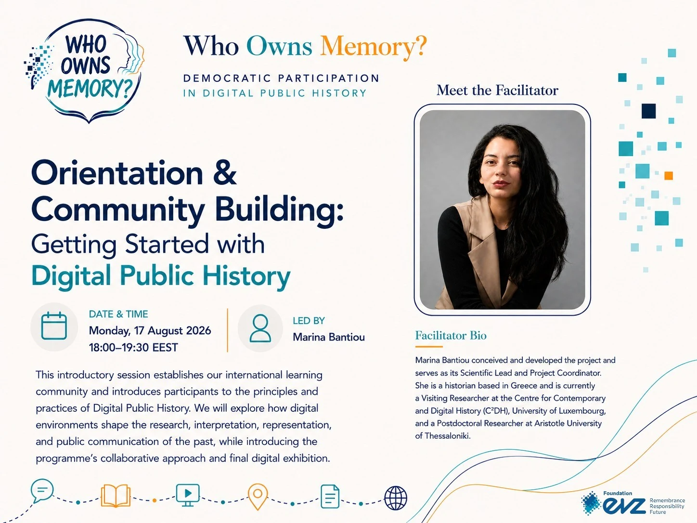
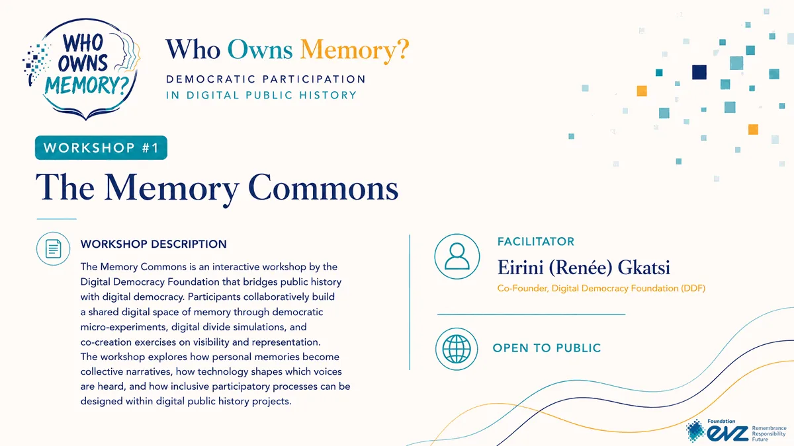
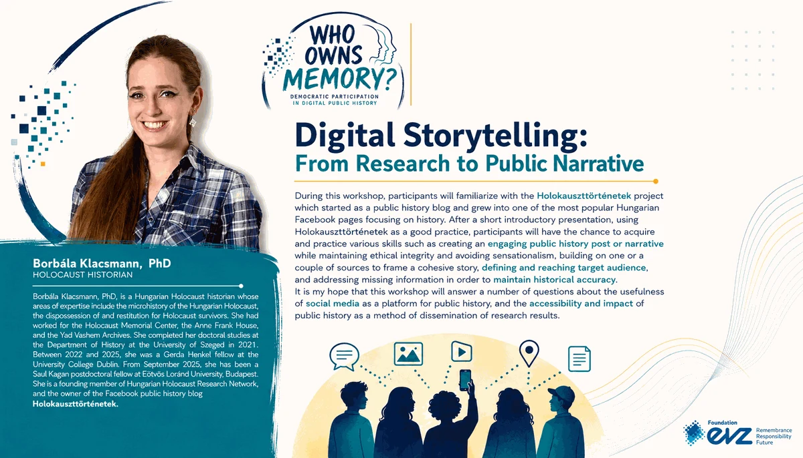
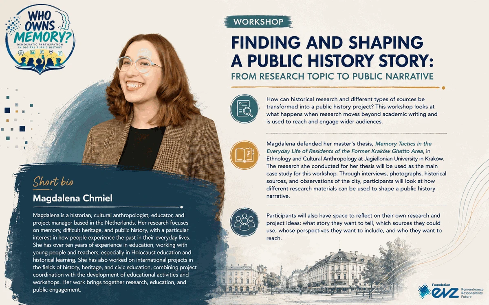
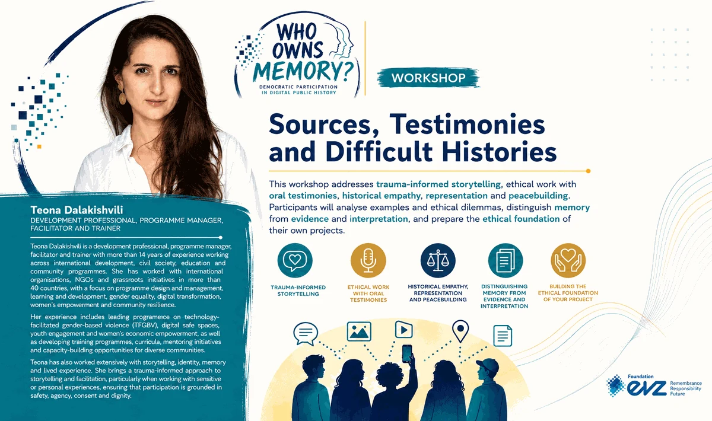
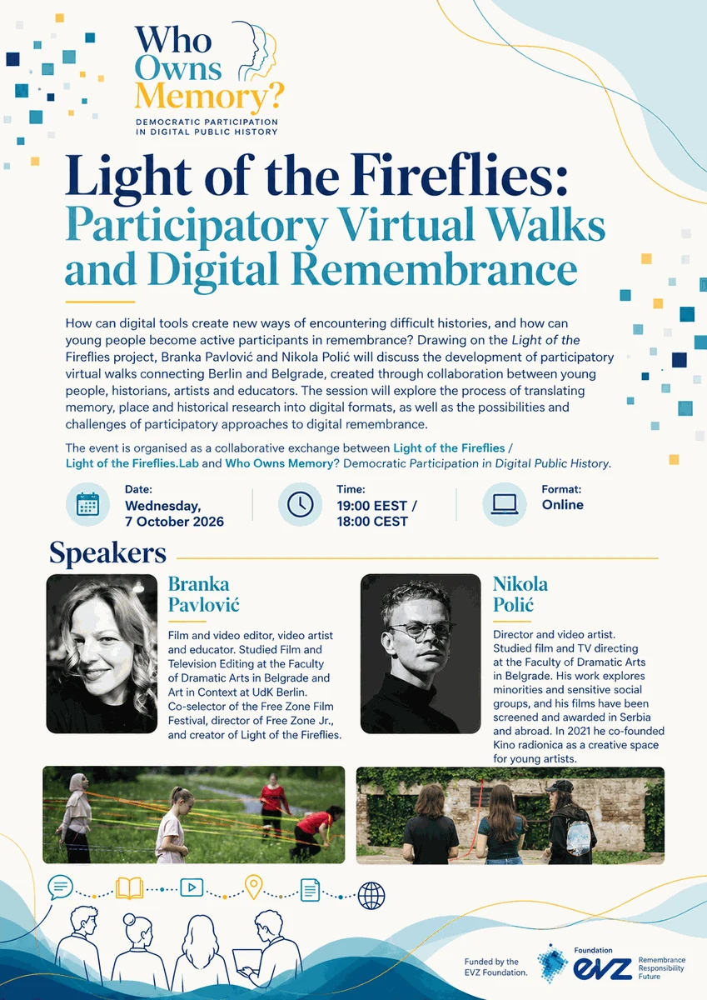
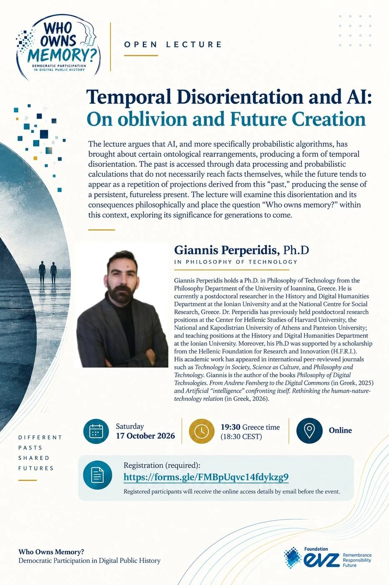
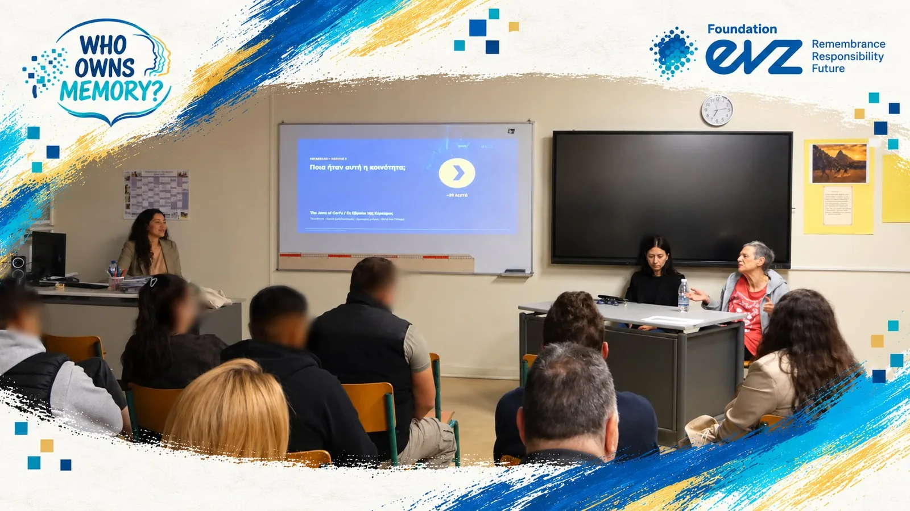

From historical question to digital public story
The 2026 cycle was designed as a connected training and production pathway rather than a sequence of independent lectures.
Orientation & Community Building
Dr Marina Bantiou: Project aims, public-history framing, digital tools, ethical expectations and the shared Corfu demonstration case.
The Memory Commons
Renée Gkatsi, Digital Democracy Foundation: Participation, inclusion, visibility, power and digital inequality.
Digital Storytelling
Dr Borbála Klacsmann: From research to public narrative, audience, historical accuracy and responsible communication.
Finding and Shaping a Public History Story
Magdalena Chmiel: Turning broad research interests into focused, feasible public-history stories.
Sources, Testimonies and Difficult Histories
Teona Dalakishvili: Trauma-informed storytelling, testimony, evidence, consent, dignity and representation.
Public programme & international exchange
Light of the Fireflies, AI and temporal disorientation, The Holocaust of the Jewish Community of Corfu at Luxembourg Centre for Contemporary and Digital History (C²DH), and the Corfu local educational event.
Digital Exhibition
The learning pathway moves into public space through participant-created digital histories.
Orientation & Community Building
The international cohort met for the first time on 17 August 2026 to establish the programme’s shared questions, methods and collaborative framework.

Core workshops
The workshop posters now function as part of the project archive: traces of the pedagogical programme as well as public communication.

The Memory Commons

Digital Storytelling

Finding & Shaping a Public History Story

Sources, Testimonies & Difficult Histories
Public lectures & exchanges
Public events extended the programme beyond production training into questions of participatory remembrance, digital mediation, AI, historical knowledge and democratic responsibility.

Light of the Fireflies
Participatory Virtual Walks and Digital Remembrance ·
Branka Pavlović & Nikola Polić · 7 October 2026.

Temporal Disorientation and AI
On Oblivion and Future Creation
Dr Giannis Perperidis · 17 October 2026.

The Holocaust of the Jewish Community of Corfu
Oral Testimonies, Place and Digital Approaches to Public History
Dr Marina Bantiou · C²DH, University of Luxembourg · 19 October 2026.

Documentary Screening & Discussion
The history and Holocaust of the Jewish Community of Corfu
Second Chance School of Corfu · 27 October 2026.